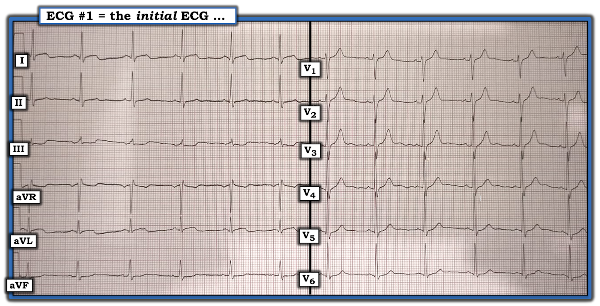
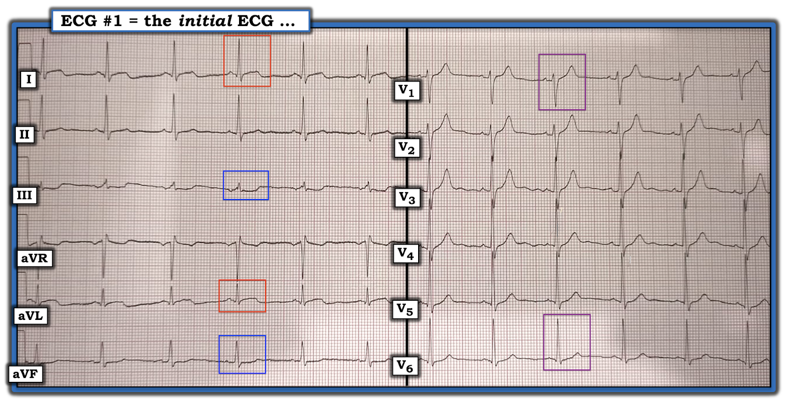
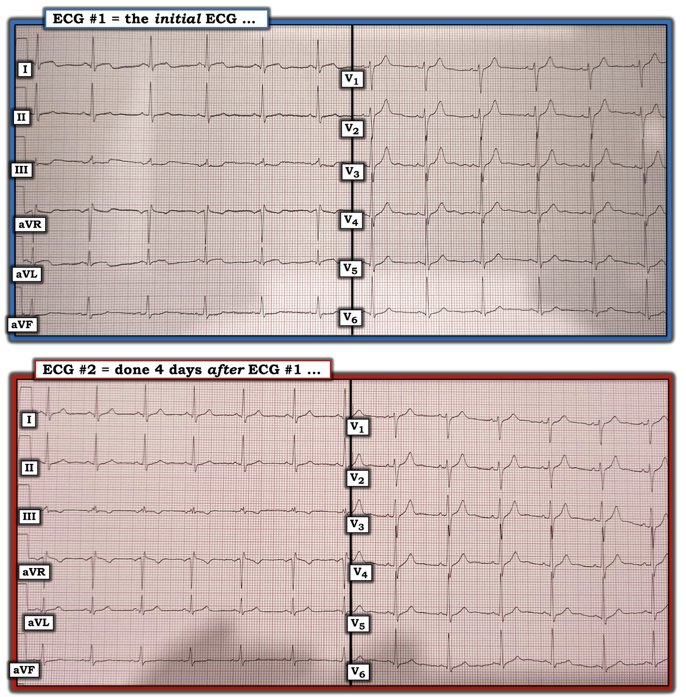

ECG Blog #182 — Covid - Viêm cơ tim - OMI
Case hôm nay nhấn mạnh tầm quan trọng của Bệnh sử trong việc đọc điện tâm đồ trên lâm sàng của chúng ta. Vậy — Hãy tưởng tượng bạn được đưa điện tâm đồ trong Hình-1 — và chỉ được cho biết bệnh nhân là một người đàn ông ở độ tuổi 30.
- BẠN sẽ đọc điện tâm đồ này như thế nào?
- Những dấu hiệu bạn thấy có nhiều khả năng là một biến thể bình thường không?


SUY NGHĨ CỦA TÔI về điện tâm đồ #1:
Nhịp trên điện tâm đồ #1 là nhịp xoang. Tất cả các khoảng (PR, QRS, QTc) đều bình thường. Trục mặt phẳng trán bình thường, ở +40 độ. Không có lớn buồng tim. Về Thay đổi Q-R-S-T:
- Có các sóng Q vách nhỏ (và bình thường) ở các chuyển đạo bên I, aVL, V5 và V6.
- Tăng tiến sóng R cho thấy vùng chuyển tiếp hơi đột ngột (tức là nơi sóng R trở nên cao hơn độ sâu của sóng S), xảy ra giữa chuyển đạo V2 và V3. Sự thay đổi đột ngột về biên độ sóng R này có thể phản ánh một sai sót nhỏ khi đặt điện cực — nhưng có lẽ đây không phải là dấu hiệu quan trọng.
Những dấu hiệu điện tâm đồ thực sự đáng lo ngại trên Hình-1 liên quan tới hình thái sóng ST-T bất thường thấy ở nhiều chuyển đạo. Những dấu hiệu điện tâm đồ này kín đáo-nhưng-có thật, và bao gồm:
- Đoạn ST dạng vòm (coving) ở cả hai chuyển đạo bên cao (trong các hình chữ nhật ĐỎ ở chuyển đạo I và aVL của Hình-2). Có thể có ST chênh lên nhẹ ở chuyển đạo aVL.
- ST chênh xuống soi gương (reciprocal) ở 2 trong 3 chuyển đạo dưới ( = chuyển đạo III và aVF, trong các hình chữ nhật XANH DƯƠNG ở Hình-2). Sóng ST-T ở chuyển đạo II không chênh xuống — nhưng dẹt hơn-mức-bình-thường.
ĐIỂM THEN CHỐT (PEARL) #1: Ủng hộ cho việc hình dạng của các đoạn sóng ST-T này không bình thường là gợi ý về phần âm cuối sóng T cực kỳ nhẹ ở chuyển đạo I và aVL — và — phần dương cuối của sóng T cũng cực kỳ nhẹ tương tự ở chuyển đạo III và aVF. Điều này không bình thường.
ĐIỂM THEN CHỐT (PEARL) #2: Khi sóng T ở tất cả các chuyển đạo ngực đều dương (như trên điện tâm đồ #1) — sóng T ở chuyển đạo V1 thường không cao hơn sóng T ở chuyển đạo V6.
- LƯU Ý: Điều này không có nghĩa là sóng T cao, dương ở chuyển đạo V1 không thể đôi khi là kết quả của một biến thể tái cực hoặc là hình ảnh soi gương của “tăng gánh” thất trái (LV strain) đôi khi có thể thấy ở các chuyển đạo trước. Thay vào đó — điều tôi muốn nói chỉ đơn giản là thỉnh thoảng — tôi nhận thấy việc nhận ra một sóng T cao, dương ở chuyển đạo V1 rõ ràng cao hơn nhiều so với sóng T ở chuyển đạo V6 là một manh mối dẫn tới một hội chứng vành cấp mà có lẽ tôi đã không nhận ra nếu không có nó.
- Hãy nhìn vào các hình chữ nhật TÍM ở chuyển đạo V1 và V6 của Hình-2. Vì điện tâm đồ #1 không có LVH — việc thấy sóng T ở chuyển đạo V1 cao hơn rõ rệt (và "đầy đặn" hơn) so với sóng T chỉ vừa đủ dương ở chuyển đạo V6 đơn giản là không phải một dấu hiệu bình thường!
- Trong bối cảnh sóng T ở chuyển đạo V1 rõ ràng cao-hơn-mức-bình-thường này — tôi tự hỏi liệu sóng T ở chuyển đạo V2 và V3 có phải cũng cao-hơn-mức-bình-thường ... hay không


TỔNG HỢP LẠI TOÀN BỘ:
Các dấu hiệu điện tâm đồ nêu trên tạo thành phần Phân tích mô tả của tôi đối với điện tâm đồ #1. Câu hỏi lâm sàng MẤU CHỐT — là NÊN đọc điện tâm đồ #1 như thế nào dưới góc độ bệnh sử của bệnh nhân? Để minh họa tầm quan trọng của Bệnh sử trong việc ra quyết định lâm sàng — Hãy xem xét TỪNG tình huống trong 3 Tình huống lâm sàng sau đây. Điều gì xảy ra NẾU:
- Tình huống #1: Bệnh nhân này đến khám vì đau ngực dữ dội, mới khởi phát?
- Tình huống #2: Bệnh nhân phủ nhận có triệu chứng. Anh ấy khẳng định mình không hề bị đau ngực.
- Tình huống #3: Bệnh nhân phủ nhận đau ngực — nhưng anh ấy có cho biết gần đây bị khó thở khi gắng sức với những hoạt động mà trước đây anh làm được mà không gặp khó khăn gì. Anh kể thêm rằng vợ anh gần đây có xét nghiệm dương tính với Covid-19.
Nhận định lâm sàng CỦA BẠN về điện tâm đồ #1 sẽ là gì đối với từng tình huống trong 3 tình huống lâm sàng này?
SUY NGHĨ CỦA TÔI về Tình huống lâm sàng #1:
NẾU được cho biết điện tâm đồ #1 được ghi ở một bệnh nhân đau ngực dữ dội mới khởi phát — tôi sẽ nghi ngờ OMI ( = nhồi máu cơ tim do tắc (Occlusion-based)) cấp cho tới khi chứng minh được điều ngược lại.
- Như đã mô tả ở trên — bằng chứng cho thấy ST dạng vòm ở cả hai chuyển đạo bên cao ( = chuyển đạo I và aVL) không đơn thuần là dấu hiệu “biến thể bình thường” đến từ: i) Hình ảnh ngược lại kiểu soi gương gồm ST chênh xuống kèm phần dương cuối sóng T ở các chuyển đạo dưới III và aVF; và, ii) Việc thấy sóng T ở chuyển đạo V1 cao hơn và đầy đặn hơn so với sóng T ở chuyển đạo V6.
- LƯU Ý: Đôi khi khá khó phân biệt sóng T nổi bật ở các chuyển đạo trước của một biến thể tái cực bình thường với sóng T tối cấp của OMI giai đoạn sớm. Dù vậy — ở một bệnh nhân đau ngực mới xuất hiện mà sóng T cao ở chuyển đạo V1 rất đáng nghi (như trường hợp điện tâm đồ #1) — tôi sẽ tự hỏi LIỆU sóng T ở chuyển đạo V2 và V3 có phải cũng lớn-hơn-mức-bình-thường, và do đó là “tối cấp” hay không. Suy cho cùng — ST chênh lên trong OMI trước vách cấp thường đi kèm ST chênh lên ở các chuyển đạo bên cao.
SUY NGHĨ CỦA TÔI về Tình huống lâm sàng #2:
NẾU thay vào đó, tôi được cho biết điện tâm đồ #1 được ghi ở một bệnh nhân hoàn toàn không có triệu chứng — tôi sẽ rất nghi ngờ rằng các dấu hiệu điện tâm đồ mô tả ở trên không phải là cấp tính.
- ĐIỂM THEN CHỐT (PEARL) #3: Tôi muốn nhấn mạnh rằng nhiều bệnh nhân (thường gặp hơn ở nam giới) xem nhẹ, thậm chí phủ nhận triệu chứng. Theo kinh nghiệm của tôi, nếu ta cẩn thận (một cách hoàn toàn không phán xét) khai thác lại bệnh sử — bạn thường sẽ phát hiện được những mô tả về các biến cố thực sự có thể đã liên quan tới tim, nhưng ban đầu bệnh nhân không kể ra. Ví dụ, bạn có thể hỏi bệnh nhân ban đầu phủ nhận triệu chứng: “Anh hãy nhớ lại vài ngày đến vài tuần vừa qua. Có bao giờ có khoảng thời gian nào (dù ngắn) — mà anh hoặc cảm thấy khó chịu (dù nhẹ) ở ngực - hoặc - thấy làm một số hoạt động hằng ngày khó khăn hơn bình thường không?”. Xin lưu ý rằng tôi tránh dùng từ “đau” một cách có chủ đích khi hỏi theo cách này về các triệu chứng có thể có.
- LƯU Ý: Ngay cả khi bệnh nhân hoàn toàn không có tiền sử triệu chứng nào có thể liên quan tới tim — Cần nhận thức rằng điện tâm đồ #1 vẫn không phải là một bản ghi “bình thường”. Có thể không nhất thiết phải đánh giá thêm — nhưng điều cốt yếu là phải nhận ra rằng điện tâm đồ #1 không phải là một bản ghi bình thường.
SUY NGHĨ CỦA TÔI về Tình huống lâm sàng #3:
Hóa ra bệnh sử thực tế của bệnh nhân trong case hôm nay chính là bệnh sử được trình bày ở Tình huống lâm sàng #3 — cụ thể, người đàn ông độ tuổi 30 này đến một phòng khám chăm sóc ban đầu và cho biết khả năng gắng sức giảm, nhưng không hề đau ngực. Vợ anh gần đây được phát hiện dương tính với Covid.
- Với bệnh sử này (nhất là khi không có đau ngực) — người ta lo ngại rằng bệnh nhân có lẽ đã dương tính với Covid với ít triệu chứng rõ ràng ngoài khó thở khi gắng sức — mà với điện tâm đồ bất thường rõ rệt của anh, nhiều khả năng phản ánh chẩn đoán viêm cơ tim cấp (là một biến chứng của Covid).
Về thực thể Viêm Cơ tim do Covid:
Theo những gì tôi đọc được trong y văn hiện nay về tổn thương tim như một biến chứng liên quan tới Covid — thì đây là một lĩnh vực đang thay đổi nhanh chóng, trong đó ngay cả các “chuyên gia” cũng không có mọi câu trả lời! Vì vậy — việc ra quyết định lâm sàng thường phải dựa vào các khuyến nghị theo lẽ thường, với nhận thức rằng các câu trả lời dứt khoát thường chưa có.
- Điều đã được biết — là tổn thương tim (bao gồm cả nhồi máu cấp) ngày càng được ghi nhận nhiều ở các bệnh nhân nhập viện vì Covid (đặc biệt nhưng không chỉ riêng ở bệnh nhân thuộc nhóm tuổi lớn hơn có bệnh đồng mắc nền). Việc thấy troponin tăng ở những bệnh nhân này tương quan rõ với tăng tử vong và mức độ nặng của bệnh — mặc dù nguyên nhân tăng troponin ở những bệnh nhân nằm viện này có thể là nhiều yếu tố (tức là bao gồm thiếu máu cục bộ/nhồi máu cấp, viêm cơ tim cấp, huyết khối trong lòng mạch, tổn thương do các chất trung gian viêm, và/hoặc các yếu tố khác chưa được làm sáng tỏ) — Kavsak và cs.; Clinical Chemistry, Nov., 2020.
- Người ta biết ít hơn về diễn tiến tự nhiên của nhiễm Covid-19 mức độ nhẹ (hoặc thậm chí không triệu chứng) ở người chơi thể thao. Mối lo ngại hiển nhiên là nguy cơ có thể xảy ra ở những người chơi thể thao không triệu chứng (hoặc triệu chứng tối thiểu) được phát hiện dương tính với Covid mà bị viêm cơ tim “thầm lặng” (do đó không được phát hiện). Tham gia không giới hạn các môn thể thao sức bền hoặc thi đấu có thể gây tử vong ở những người này. Y văn hiện có gợi ý rằng viêm cơ tim dưới lâm sàng có xảy ra — dù tần suất của dạng tổn thương tim này ở vận động viên không có triệu chứng rõ ràng thì chưa rõ. Đáng tiếc là cách tiếp cận tối ưu để đánh giá và phân tầng nguy cơ ở người chơi thể thao dương tính với Covid hiện vẫn còn chưa chắc chắn (Kim và cs. — JAMA Cardiology, Oct., 2020 — và Rajpal và cs. — JAMA Cardiology, Sept., 2020).
- Trong số các chiến lược được đề xuất để xác định những vận động viên có thể có nguy cơ cao hơn có xét nghiệm troponin tim. Đáng tiếc là, không giống như ở nhóm dân số thường lớn tuổi hơn nhập viện vì bệnh liên quan tới Covid — ý nghĩa lâm sàng của tình trạng troponin độ nhạy cao tăng nhẹ ở các vận động viên có triệu chứng tối thiểu vẫn chưa chắc chắn (Kim và cs. — JAMA Cards, 2020).
- Các công cụ đánh giá tim tiềm năng khác gồm CMR (chụp Cộng hưởng từ tim (Magnetic Resonance imaging)) — điện tâm đồ — siêu âm tim — ETT (nghiệm pháp gắng sức (Exercise Tolerance/Stress Test)) — và Holter 24 giờ. Các phác đồ về thời điểm và số lượng công cụ đánh giá cần thực hiện ở người chơi thể thao nghi có tổn thương tim trước khi cho phép quay lại tập luyện/thi đấu rất phức tạp và vượt ngoài phạm vi của bài ECG Blog này (Để có ý niệm về một số Hướng dẫn chung — Xem Kim và cs. — JAMA Cardiology, Oct., 2020).
Theo Dõi Case Hôm nay:
Bệnh nhân trong case hôm nay được khám ngoài bệnh viện. Mặc dù thông tin chi tiết và theo dõi còn hạn chế — bệnh nhân được khám lại 4 ngày sau lần khám đầu, và khi đó đã ghi điện tâm đồ #2 (Xem Hình-3). Đáng chú ý — bệnh nhân không còn khó thở khi gắng sức vào thời điểm ghi điện tâm đồ #2!
- Bạn sẽ đọc điện tâm đồ #2 NHƯ THẾ NÀO trong mối liên hệ với bệnh sử lâm sàng nêu trên?


SUY NGHĨ CUỐI CÙNG:
Nhận thức rằng thông tin trong case lâm sàng này còn hạn chế — tôi sẽ đưa ra chẩn đoán giả định là Viêm cơ tim liên quan tới Covid vì:
- Bệnh nhân này có phơi nhiễm nguy cơ cao với Covid-19 (vợ anh dương tính với Covid).
- Mặc dù anh không báo bất kỳ triệu chứng thường gặp nào của Covid (tức là KHÔNG sốt, đau đầu, đau cơ, triệu chứng “cảm lạnh”, mất vị giác hay khứu giác) — anh có báo khó thở khi gắng sức vào thời điểm khám lần đầu — và điện tâm đồ ban đầu ( = điện tâm đồ #1) của anh rõ ràng bất thường và phù hợp với viêm cơ tim.
- Việc hoàn toàn không đau ngực khiến khả năng các bất thường điện tâm đồ thấy trên bản ghi ban đầu của bệnh nhân này là hậu quả của nhồi máu cấp trở nên thấp hơn nhiều. Điều này để lại viêm cơ tim cấp là tình trạng nhiều khả năng nhất giải thích các bất thường chúng tôi đã ghi nhận ở trên đối với điện tâm đồ #1.
- Bệnh nhân không còn khó thở khi gắng sức vào thời điểm ghi điện tâm đồ #2!
- Đánh giá điện tâm đồ #2 (ở Hình-3) — gợi ý cải thiện rõ ràng so với các bất thường điện tâm đồ đã thấy ở điện tâm đồ #1. Cụ thể — i) ST dạng vòm ở các chuyển đạo bên cao (và ST chênh lên nhẹ ở chuyển đạo aVL) không còn trên điện tâm đồ #2; ii) Sóng ST-T chênh xuống soi gương ở chuyển đạo III và aVF — và sóng ST-T dẹt ở chuyển đạo II — đều giảm nhiều trên điện tâm đồ #2; và, iii) Sự mất cân xứng về kích thước sóng T giữa chuyển đạo V1 và V6 rõ ràng ít rõ rệt hơn trên điện tâm đồ #2 so với trên điện tâm đồ #1.
- Tổng hợp lại — Việc các bất thường điện tâm đồ rõ ràng đã cải thiện qua các lần ghi vào thời điểm tái khám 4 ngày sau, đi kèm với hết khó thở do gắng sức, càng ủng hộ thêm rằng: i) các bất thường điện tâm đồ thấy trên điện tâm đồ #1 là có thật; ii) chẩn đoán giả định viêm cơ tim cấp nhiều khả năng là chính xác; và, iii) tình trạng lâm sàng của bệnh nhân đã cải thiện đáng kể.
Nhìn lại:
- Chẩn đoán viêm cơ tim cấp có thể đã được xác định chắc chắn hơn ngay ở lần khám đầu của bệnh nhân này nhờ làm thêm xét nghiệm (tức là troponin, điện tâm đồ nhiều lần, siêu âm tim — và xét nghiệm kháng nguyên & kháng thể Covid).
- “Nguy cơ” lâu dài đối với bệnh nhân này do viêm cơ tim liên quan tới Covid giả định của anh vẫn chưa chắc chắn. Ngoài các xét nghiệm đề xuất ở trên — CMR và nghiệm pháp gắng sức có thể giúp định hướng việc quay lại hoạt động đầy đủ, không cần giám sát. Trong thời gian chờ — tốt nhất nên tránh hoạt động quá sức.
------------------------------------------------------------------------
Đọc THÊM:
- Để xem một ví dụ khác về hiện tượng sóng T ở chuyển đạo V1 không nên cao hơn sóng T ở chuyển đạo V6 — HÃY XEM bài đăng ngày 23 tháng 10, 2020 trên Dr. Smith’s ECG Blog. Vui lòng KÉO XUỐNG cuối trang để tới Bình luận của tôi tại đường link này.
- NẾU khái niệm “OMI” ( = nhồi máu cơ tim do tắc (Occlusion-based)) như thuật ngữ được ưu tiên thay cho “STEMI” còn mới với bạn — Hãy XEM các bài đăng ngày 31 tháng 7, 2020 và ngày 13 tháng 9, 2020 trên Dr. Smith’s ECG Blog. Vui lòng KÉO XUỐNG cuối trang để tới Bình luận của tôi ở các đường link tới Blog của Dr. Smith này.
- NẾU khái niệm thay đổi soi gương (reciprocal) dạng hình ảnh đối xứng gương về hình dạng sóng ST-T ở chuyển đạo III so với chuyển đạo aVL còn mới với bạn — Hãy XEM ECG Blog #171 của tôi và các bài đăng ngày 9 tháng 8, 2018 và ngày 6 tháng 10, 2018 trên Dr. Smith’s ECG Blog. Vui lòng KÉO XUỐNG cuối trang để tới Bình luận của tôi ở các đường link tới Blog của Dr. Smith.
- Như đã nêu trong phần bàn luận ở trên — các quan điểm chung về đánh giá và xử trí tổn thương tim có thể có ở vận động viên, kèm hướng dẫn về thời điểm có thể cho phép quay lại tập luyện/thi đấu một cách an toàn, được đề xuất trong Kim và cs. — JAMA Cardiology, Oct., 2020.
-------------------------------------------------------------------------
- LỜI CẢM ƠN: Xin cảm ơn Kristijan Todoroski (đến từ Macedonia) đã cung cấp case và các bản ghi hôm nay.
-------------------------------------------------------------------------